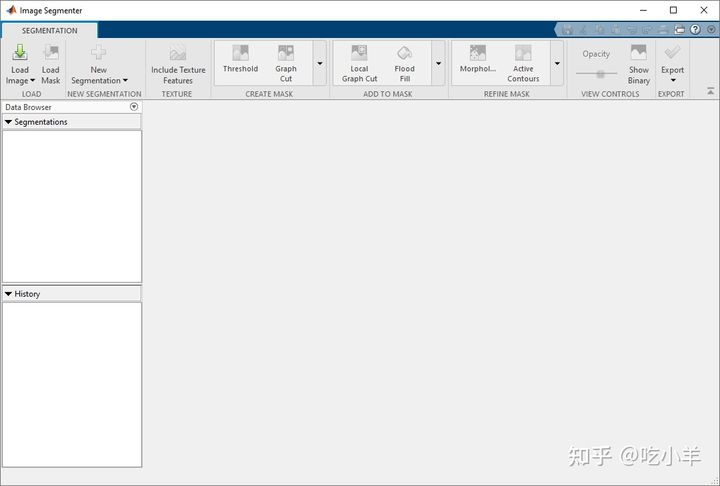
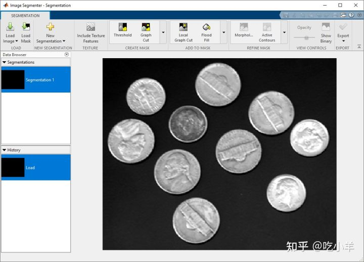
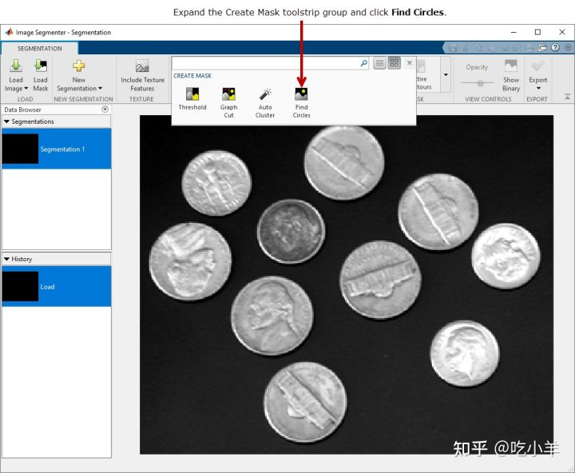
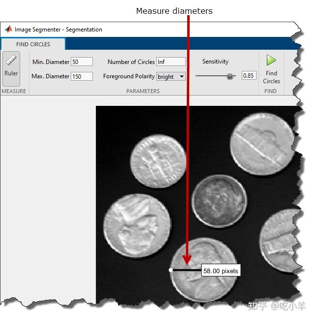
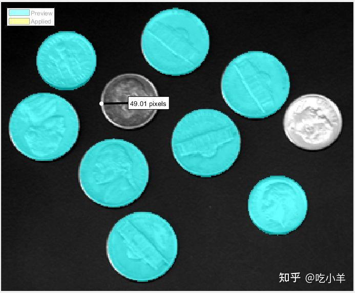
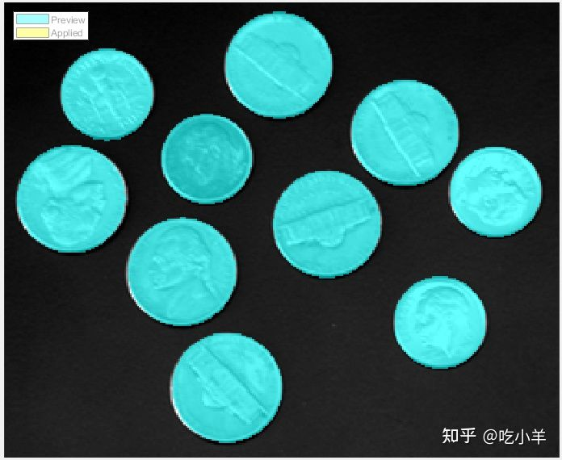
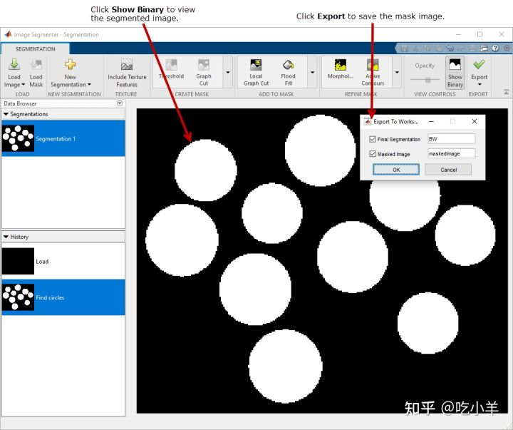

Home
本示例展示了如何使用Image Segmenter 应用程序中的Find Circles选项来分割图像。Find Circles 选项是一种自动分割技术，可用于将图像分割为前景和背景元素。Find Circles 选项不需要初始化。
将图像加载到图像分割器应用程序中
将图像读入工作区。
coins = imread('coins.png');
从 MATLAB® 工具条中，打开Image Segmenter应用程序。在应用程序选项卡上的图像处理和计算机视觉部分，单击Image Segmenter图标


在应用程序工具条上，单击加载图像，然后选择从工作区加载图像。在从工作区导入对话框中，选择您读入工作区的图像。该Image Segmenter应用显示您所选择的图像。

您还可以使用以下imageSegmenter命令打开应用程序，指定图像：
imageSegmenter(coins);
使用 Find Circles 分割图像
在Image Segmenter应用程序工具条上，展开 Create Mask 部分并选择Find Circles。

该Image Segmenter应用程序将打开一个新标签的查找圆细分选项。
在 Find Circles 选项卡中，首先单击标尺并测量图像中一些代表性圆的直径以确定大小范围。要查找圆，您必须指定直径的下限和上限。设置Min. Diameter 和 Max. Diameter字段为您认为包括所有对象的值：50 和 150。

在“查找圆”选项卡上，单击“查找圆”。该Image Segmenter应用填充它找到的圆圈。但是， find circles 不会找到其中的两个圆圈。更仔细地检查图像，您会发现这些硬币的直径略小于指定的最小直径。

更改最小值以适应未分割对象的大小，然后再次运行查找圆分割操作。这一次，Find Circles 分割了图像中的所有对象。

将蒙版图像保存到工作区
当你对分割满意时，点击创建蒙板上查找圆标签工具条和创建蒙版图像。该Image Segmenter应用程序关闭查找圆标签，并返回到分割标签。分段圆圈的颜色变为黄色。要查看蒙版图像，请单击Show Binary。
完成图像分割后，使用“导出”选项保存蒙版图像。您还可以获得用于分段的代码。

======================================================================
我的测试结果及程序
下面是我测试的代码：

注：本文根据MATLAB官网内容修改而成。